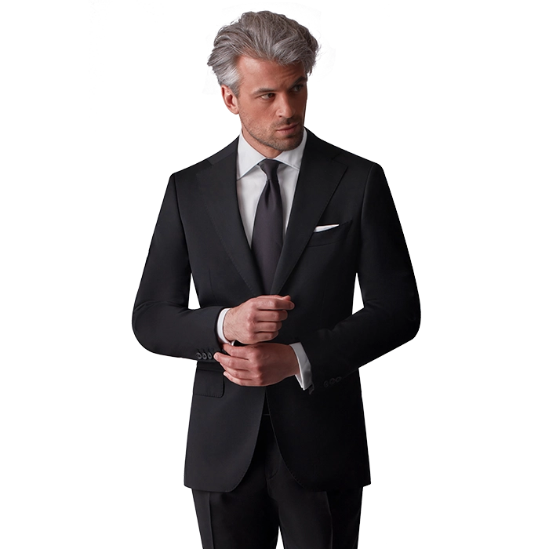

Strój uczniowski
Strój uczniowski chłopców
- Garnitur o klasycznym kroju (jedno- lub dwurzędowy z kamizelką lub bez)
- Wykonany z jednolitego granatowego materiału bez wzorów
- Błękitna lub jasnoniebieska koszula bez wzorów z długim lub krótkim rękawem
- Granatowy krawat bez wzorów, czarne wizytowepółbuty,czarne skarpety

Strój uczniowski dziewcząt
- Żakiet, spódnica o długości do kolan lub spodnie o klasycznym kroju
- Wykonane z jednolitego granatowego materiału bez wzorów
- Błękitna lub biała bluzka bez wzorów,zakrywająca ramiona, dekolt, zapinana lub nie, z długim lub krótkim rękawem
- wizytowe czarne buty lub sandały
- rajstopy w kolorze cielistym